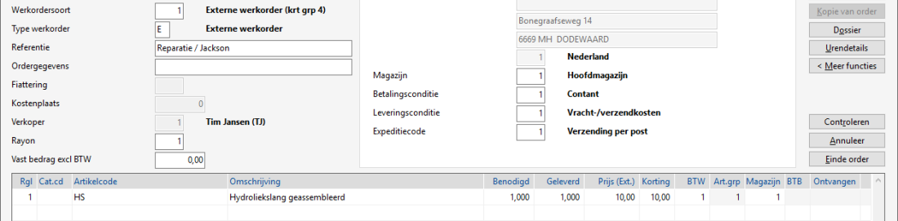
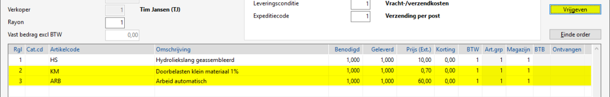

Ga naar Selecteren werkorders (WS).
Selecteer de vrij te geven werkorder.
Of
Kies voor de knop Wijzigen.
-
Kies voor de knop Controleren dit is een instelling.
-
 Klik hier voor meer informatie over een voorbeeld:
Klik hier voor meer informatie over een voorbeeld:
Opmerking: Deze controle optie geldt alleen bij externe werkorders.
Bij Invoeren/wijzigen werkorder staat er de knop Controleren i.p.v. Vrijgeven.
-
Kies voor de knop Controleren.

-
Na controle verandert de knop(tekst) in Vrijgeven:

- 1 % van het werkorderbedrag is 60 + 10 = 70,00 is 0,70 klein materiaal kosten.
- De werkbon kan zo gecontroleerd en vrijgegeven worden.
In de regels worden de volgende gegevens (indien aanwezig) toegevoegd ter controle:
- Uren opgegeven via de knop Urendetail zie Werkorder uren registreren.
- Doorbelasting klein materiaal.
- Bij optie Handhaven, opgave vaste prijs/bedrag.
Belangrijk: Bij het verlaten van het programma, verdwijnen deze regels.
-
-
Voor meer info zie Hoe ziet mijn werkorder bon eruit, na controle / vrijgave wat zijn de opties?
-
-
Ga verder met stap 4.
Kies voor de knop Vrijgeven. Een pop-up scherm verschijnt met een bevestigingsvraag.
-
Wilt u werkorder XXX werkelijk vrijgeven?
Opmerking: Tijdens het vrijgeven wordt gecontroleerd of het aantal benodigd groter is dan het aantal geleverd (of geleverd is 0). Er verschijnt dan een waarschuwingsbericht:

Controleer de werkorder / vul het aantal geleverd in of verwijder eventueel de artikelregel.-
Het volgend scherm kan verschijnen bij het vrijgeven van een werkorder (via de Werkbon App):

-
Kies voor de knop Verder.
-
Kies voor de knop Ja.

Instelling als Interne werkorders direct verwerken Ja OF Ja, huidige periode:
Bij Ja, huidige periode wordt de interne WO doorgeboekt in de huidige periode en verschijnt onderstaand scherm niet meer, vanaf versie 3.11.
-
Controleer de periode.
-
Kies voor de knop Doorboeken.

Opmerking: Bij annuleren (d.m.v. Kruisje) dient de werkorder later handmatig doorgeboekt te worden.